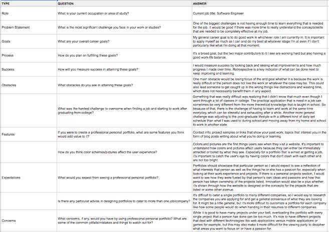
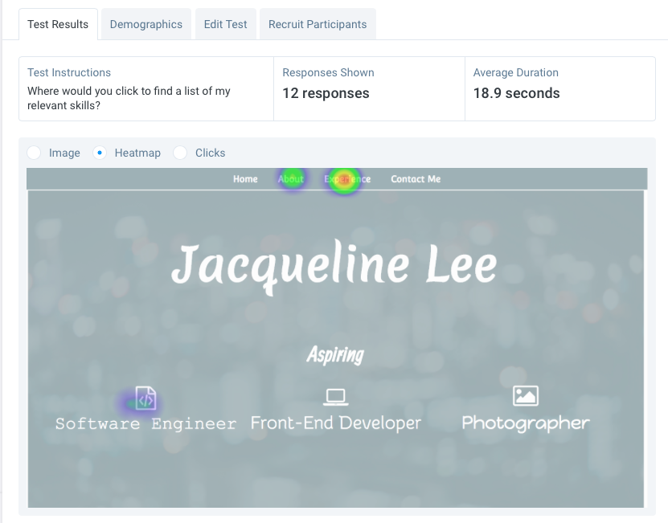

User Research
User Interviews
| User interviews are a crucial part of the software development process because all software should be designed and developed with a user in mind. Interviews help the developer understand what the users want and need in the final product. Having this information gives a clear sense of direction towards defined goals. | |
|  |
Competitor Analysis
| Competitor analysis provides insight into the strengths and weakness of companies or products that achieve a similar purpose as the one being developed. For this portfolio, I took a look at some other students' and working professionals' portfolios as well as the structure of how LinkedIn lays out portfolios in order to come up with features and the design I wanted for my portfolio. | |
Feature Value Matrix
| The feature value matrix for this project considers several possible features and content that could be included in my portfolio. This matrix helps to organize all the features that I wanted to be in my portfolio through ranking their value according to user value, business value, development effort, and available tools. | |
Feature Prioritization
| According to the rankings of different features in the Feature Value Matrix, I was able to create a graph depicting the priority levels of all the features. Then I created another graph to show how these features rank according to business value and technical difficulty. These two graphs helped me to understand which features I should implement first. | |
User Testing
User Stories
| These user stories were based off the feature value matrices, competitor analysis, and user interviews. These user stories also take into account different types of audiences and what they would want to see in a portfolio. | |
Cognitive Walkthrough
| Cognitive walkthroughs consists of giving users a set of tasks to complete and observing their reactions and whether they can accomplish a tasks quickly and easily. These walkthroughs help to determine the spots at which there are usability issues that were not necessarily thought of beforehand. | |
User Testing
| For quantitative user testing, I used tests hosted on usabilityhub.com. My main tests focused on the navigation and layout of my website as well as how the content was displayed to the user. These tests were helpful because they gave me a general idea of how users were interacting with my home page and how to improve it. | |
|  |
Summary of Findings
A theme that came up through my research and testing was that the layout of content is very important. Users also generally need a good navigation tool and the appropriate color scheme for the website to have a successful user experience.
Incorporation of Findings
After understanding how layout affects the user experience, I redesigned the home page of my website to be more simple but to still have a similar impression on the user. I am still working on organizing and coding the layout of larger blocks of text across my webpage so that the content is easy for users to understsand. Additionally, color scheme and images are things that I am working on so that the website has a professional but still friendly feel to it.